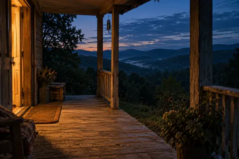
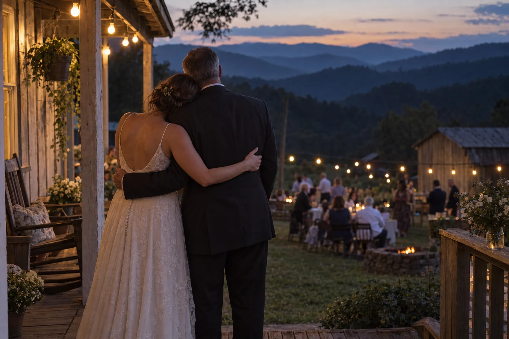

Your personal keepsake page
A permanent link with your song, lyrics, and story.

CUSTOM SONGWRITING
I turn your memories into a custom song
for someone who matters.
$150 flat · Delivered in 48–72 hours

Pull up a chair.WHAT A CUSTOM SONG CAN MEAN
“My daughter cried, as well as I did. I would have him write a hundred songs for me.”
“My song has brought so much comfort to me. Every time I listen, I realize how blessed I was.”
“Tim took over and crafted a truly remarkable tribute that beautifully honored our dear friend.”
FOR THE MOMENTS WORTH HOLDING ONTO
THE STORIES ALREADY SINGING
FROM THESE HILLS. FOR YOUR PEOPLE.
The laughter. The ache. The love underneath it all.
Your memories and your words, made into a song
only your story could have made.

The kind of love you carry with you.THE HEARTSTRINGS KEEPSAKE
A permanent, personal page brings your song, lyrics, story, and custom artwork together. Share the link with your people, or keep it close.
See everything included ↓A permanent link with your song, lyrics, and story.
Made for your song, ready to print or use as a profile photo.
An MP3 to keep forever, a printable lyric sheet, and an MP4 ready to post on Facebook or play at a service.
FROM MEMORY TO MELODY
Names. Memories. Inside jokes. The things only you know. Share them in a short intake form, along with the style and feeling you have in mind.
Tim writes the lyrics and produces your song. You'll see the lyrics first, with one round of revisions before production.
In 48–72 hours, your keepsake page arrives by email, with your song, artwork, and downloads ready to enjoy.
ONE STORY. ONE PRICE.
Personally written by Tim Harbert.
Built around the people who matter to you.
Memorial songs always receive free 24-hour delivery. No rush fee. That worry is off your list.
If the finished song misses the mark, Tim starts over from scratch.
 LUMBERPORT, WEST VIRGINIA
LUMBERPORT, WEST VIRGINIATHE PERSON BEHIND YOUR SONG
I'm the founder of Heartstrings Studio. I create custom songs that honor life's meaningful moments — love, loss, gratitude, and the spaces in between.
Music carried me through some dark chapters and taught me the power of real connection. Now I help others preserve what matters most through melody and story.
When words fall short, a song can hold what needs to be remembered.
Watch my story on WBOY's 304 Today ▶A FEW THINGS YOU MAY BE WONDERING